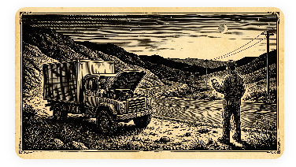

A Odisseia da Proposta B2B: Engenharia, Riscos e a Construção de uma Solução Aplicável
Chegou o cliente apressado, querendo economizar,
Mas trouxe regras complexas que fomos decifrar.
Do PWA offline à trava de desvio,
Moldamos a proposta enfrentando cada desafio.
No vai e vem das revisões a arquitetura cresceu,
E um ecossistema sólido e maduro então nasceu.
O contraste entre a poesia popular do cordel e o rigor de um sistema de missão crítica ilustra o desafio de qualquer arquiteto de software: traduzir a complexidade do ambiente de campo em decisões lógicas que protegem a operação real.
1. O Primeiro Contato: Um Escopo que Enganava pela Simplicidade
Tudo começou com um e-mail curto. Um grande operador de socorro mecânico rodoviário precisava de um aplicativo para despachar equipes, registrar quilometragem e gerar laudos de atendimento. À primeira vista, parecia um sistema direto.
Mas, ao envolver engenharia desde o início, o cenário real emergiu: um ambiente de missão crítica, com conectividade irregular, riscos operacionais e exigências rígidas de integridade dos dados. O que parecia simples não sobreviveria ao mundo real.
2. Fase 1 — Descobrindo as Dores da Operação
As primeiras reuniões revelaram restrições que mudaram completamente o desenho da solução:
- Rodovias sem sinal: A operação não podia depender de internet ativa. A solução evoluiu para um PWA offline que utiliza armazenamento local no celular do operador, sincronizando os dados em fila de forma assíncrona assim que a conectividade for restabelecida.
- Infraestrutura sensível a custos e complexidade: O cliente já possuía estrutura física consolidada na sua sede. A arquitetura foi desenhada para operar com um banco PostgreSQL local, enquanto o servidor em nuvem funcionaria apenas como um gateway stateless (sem retenção de dados), cortando dependências externas e tarifas mensais recorrentes de hosting.
- Risco de inconsistências de quilometragem: Para evitar fraudes ou preenchimentos errados de odômetros, foi criado um motor de geofencing (cerca eletrônica), validando a posição física do GPS antes de permitir a abertura ou avanço das ordens de serviço.
Cada descoberta removia uma camada de ingenuidade do escopo inicial e aproximava o sistema da realidade operacional de campo.
3. Fase 2 — A Versão 8.0 e o Fechamento das Arestas
Uma solução madura não nasce apenas da entrega de funcionalidades: ela nasce da antecipação proativa de falhas. Na revisão final da proposta, foram adicionados mecanismos que blindaram a confiabilidade do ecossistema:
- Limitações do iOS em alertas críticos: Como o sistema precisava emitir alertas sonoros mesmo com o smartphone do mecânico no modo silencioso, foi prevista uma contingência automatizada com ligações telefônicas diretas via API de voz caso as restrições da Apple bloqueassem o comportamento do app móvel.
- Migrações de dados previsíveis: Com um banco centralizado local e centenas de aparelhos móveis operando isolados, atualizações de tabelas exigiam controle severo. Foram definidas migrações automatizadas tanto na retaguarda central quanto nas bases locais SQLite nos celulares.
- Monitoramento preventivo da infraestrutura: Para evitar falhas silenciosas de hardware na sede, integrou-se um painel de telemetria local (painel de medição que acompanha a saúde do computador central) que monitora a integridade do backup físico (HD externo usado para salvar cópias de segurança), a temperatura do servidor e os pings de heartbeat constantes (sinais de teste periódicos que avisam se o sistema local está "vivo" e conectado) enviados pelo gateway da nuvem (o servidor intermediário na internet).
Essas decisões não adicionaram funcionalidades extras ao cliente, mas sim proteções — e proteção técnica é o que de fato diferencia um sistema que simplesmente funciona de um ecossistema corporativo realmente confiável.
4. IA como Insumo de Engenharia
A Inteligência Artificial não foi tratada como adereço comercial, mas como uma ferramenta séria de engenharia. Modelos avançados e sandboxes (ambientes de teste isolados e seguros para simular e rodar códigos) de desenvolvimento assistido foram formalmente incorporados ao processo para acelerar análises de código, revisões e simulações de cenários de teste, permitindo que a solução evoluísse com precisão técnica milimétrica e previsibilidade de prazos. IA aqui não é mágica de automação: é insumo de produtividade técnica sênior.
5. A Evolução da Arquitetura (O Ecossistema)
O ecossistema funciona como uma corrente contínua: o app móvel coleta os dados offline, sincroniza-os em fila assíncrona assim que possível, o gateway os encaminha instantaneamente sem retenção na nuvem e o PostgreSQL local mantém a verdade central e histórica da operação.
Arquitetura de Software
O gateway back-end baseado em Quarkus 3 atua como um roteador leve e sem estado, garantindo que cada evento siga seu caminho sem acumular dados na nuvem. A persistência local em SQLite e IndexedDB viabiliza a independência de rede dos mecânicos na pista.
Segurança e Governança
Concorrência mitigada via protocolo Last-Write-Wins (LWW) cronológico. Triggers nativas gravam chaves hash criptografadas que barram fisicamente a alteração de laudos finalizados, blindando a integridade das auditorias.
6. A Lição da Odisseia
A jornada de refinamento da proposta mostrou que a engenharia B2B madura não é sobre “construir linhas de código”. É sobre entender profundamente o ambiente do usuário, antecipar riscos ocultos, proteger o cliente contra falhas invisíveis e traduzir o caos operacional do dia a dia em uma arquitetura limpa e aplicável.
A verdadeira engenharia não nasce do código, mas da capacidade de transformar o caos operacional em sistemas que resistem ao mundo real.
Dicionário de Termos Técnicos
Para facilitar a leitura e o entendimento do artigo, organizamos os conceitos técnicos e jargões utilizados em ordem alfabética:
- B2B (Business-to-Business): Modelo de negócios no qual uma empresa desenvolve soluções ou presta serviços técnicos diretamente para outra empresa.
- FinOps: Disciplina que aplica inteligência financeira na engenharia de software para otimizar, reduzir e controlar custos operacionais de servidores na nuvem.
- Flyway (Migrations): Sistema de versionamento de banco de dados que executa scripts ordenados para atualizar tabelas sem quebrar a integridade das informações já salvas.
- Gateway Stateless (Sem Estado): Servidor intermediário na nuvem que não grava dados de forma permanente em disco; funciona apenas como um "passador" de dados para reduzir custos e elevar a segurança.
- Geofencing (Cerca Eletrônica): Uso do sinal de GPS para criar uma barreira geográfica virtual ao redor de uma coordenada no mapa, controlando se o usuário está ou não no local esperado.
- Heartbeat (Sinal de Presença): Sinais periódicos enviados de forma automatizada pela internet que indicam se uma máquina local ou a rede física continuam ativas.
- Last-Write-Wins (LWW): Regra para resolver conflitos de dados que dá preferência ao registro contendo o carimbo de data/hora (timestamp) mais recente.
- Offline-First: Filosofia de design de software na qual o sistema é projetado para operar sem internet, guardando dados localmente e enviando-os quando a conexão retorna.
- PostgreSQL e SQLite: PostgreSQL é o banco de dados corporativo principal e centralizado. SQLite é o banco de dados leve que fica no celular de cada mecânico gravando os dados offline.
- PWA (Progressive Web App): Aplicação web executável no navegador do celular que se comporta como um app nativo, permitindo instalação e funcionamento offline.
- Triggers (Gatilhos): Instruções internas de segurança que barram automaticamente qualquer tentativa externa de modificar ou deletar logs históricos importantes no banco.
Hashtags
Contato
- E-mail: suporte@caracore.com.br
- Site: www.caracore.com.br
- Iniciativa CaraCore CSO: Página de Releases e Deploys
- LinkedIn: Cara Core Informática
Se você gerencia frotas ou serviços de campo e quer testar uma nova geração de software com soberania de dados, fale com a gente.
Ver página de deploy Falar com engenheiros
Artigo publicado em 26 de maio de 2027
© 2027 Cara Core Informática. Todos os direitos reservados.